Sim-robot-learning · 归档于 2026-11-15
GR00T 2
GR00T 2: Scaling Robot Foundation Models for Generalization, Dexterity, and Adaptation
PDF Project page Human-1M-100K
归档到 Robot learning in simulation：robot foundation model，用人类视频、UMI 和遥操作做 imitation，覆盖 dexterous、whole-body 和 sim-to-real；§3.4 的 Agentic GR00T 2（S2 agent 通过 MCP 调 policy 和 CaP）同时服务 Robotic harness。
TL;DR
- Problem
- VLA 把“做什么”和“用这个身体怎么做”学进同一张图像→动作映射。任务只由人示范、机器人没遥操作过时，同样的数据下，baseline 在例子上全是 0%。
- Idea
- World-action model（WAM）：一个 2B diffusion transformer 同时去噪未来视频和动作。视频预测学“场景该怎么变”，人和机器人共享；动作头学“这台机器人怎么做到”。
- Result
- 只看 75 条手持 UMI 示范、零遥操作，YAM 装 Toy Dumptruck 60%（π0.5、LingBot-VA、GR00T 1.7 都是 0%）；加 DAgger 和 S2 agent 后，乱倒零件装 Toy Tractor 97/100。
Problem
任务只有人示范过，机器人自己一条遥操作都没有
Running example · 后面每个 stage 都跟着它走
YAM 装玩具车：输入 75 条手持 Gripper UMI 示范（人在办公桌上录）+ YAM 的 task-agnostic 遥操作数据（不含这个任务）→ 想要：YAM 在自己的工位里按指令 Mount the wheels on the toy dump truck, screw and drill them in place, then flip the truck and repeat on the other side. 端到端装好 Toy Dumptruck。
后半程换成同一台 YAM 的 Toy Tractor：这次有遥操作数据，目标是零件乱倒在桌上也能装好。
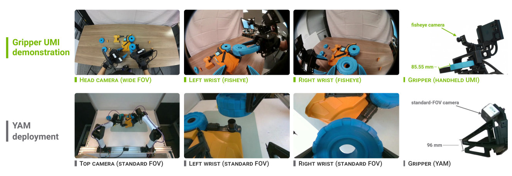
怎么读这张图
- 上排 Gripper UMI demonstration：head camera 是广角，两个 wrist camera 是约 180° 的 fisheye；画面里是人手和蓝色手指的手持夹爪，背景是办公桌。
- 下排 YAM deployment：top 和 wrist camera 都是 standard FOV（wrist 78×63°）；画面里是 YAM 自己的手臂，背景是机器人工位。
- 最右两个夹爪：UMI 全开 85.55 mm，YAM 全开 96 mm，相机装的位置也不同。
- 两排是同一步：左夹爪扶住车身，右夹爪把第二个轮子对到轴上。差别归成三个 gap：sensing（相机）、actuation（夹爪和控制空间）、environment（场景）。
flowchart LR IN["例子输入
75 条 UMI 示范
+ YAM play data"] IN --> A1["VLA
π0.5 · GR00T 1.7"] A1 --> AX["任务和身体绑在一张映射里
Prog. 0 · SR 0%"]:::gap IN --> B1["World-model 类 policy
LingBot-VA"] B1 --> BX["论文只报了结果
Prog. 0 · SR 0%"]:::gap IN --> C1["GR00T 2 去掉 UMI 预训练
结构不变"] C1 --> CX["粗步骤会，对孔拧螺丝失败
Prog. 84 · SR 20%"]:::gap
数字都来自 Tab. 4（Toy Dumptruck，每个模型 10 次，同样的 post-training 数据和步数）。VLA 那条的原因是推断：§B.1.5 用 GR00T 1.7 在 Human → Dexter 上论证的，UMI → YAM 这里论文只报了 Prog. 和 SR。第三条的现象来自 §E.3.4。
根本问题：VLA 要在同一张 observation→action 映射里同时学“做什么”和“用这个身体怎么做”，示范一换身体就对不上。 这篇的切入点：让模型同时预测未来视频。场景该怎么变，人和机器人大体相同，交给视频；这台机器人怎么实现，交给动作头和它自己的 play data（§B.1.5）。
Related work
| 相关工作 | 解决什么 | 怎么解决 | 和本文的区别 |
|---|---|---|---|
| 同一问题 · 别的解法 | |||
| VLA π0.5, GR00T 1.7 | 大规模机器人示范 → 通用操作 policy | 图像和语言直接映射到动作，只有动作监督 | 人的示范只能当“人手画面配 retarget 动作” → 本文加未来视频预测，任务归视频，身体归动作头 |
| World-model 类 policy（本文所属） LingBot-VA, Fast-WAM | 同样是通用 policy | 也做 world modeling；论文没展开它们的结构 | 论文只给结果（同数据 0%） → 本文的消融指向 pretraining：先在人、UMI、多种机器人上对齐身体，去掉后 60% → 20% |
| 原版 UMI / DexUMI Chi et al. 2024, Xu et al. 2025 | 不占机器人就能采示范 | 机器人末端复刻手持设备的相机和手指；或离线把外骨骼 inpaint 成机器人手 | 靠硬件一致或改视频消 gap，换机器人要重做 → 本文让模型吸收外观差，只做视角重渲染和 action 改写 |
| 相似做法 · 别的问题 | |||
| Diffusion policy 的 RL 微调 DPPO, RL-100 | 用 RL 改进 action-only 的 diffusion policy | 把每一步去噪当成能算 likelihood 的随机转移 | 只有动作在去噪 → 本文还要同时去噪视频：噪声只加在动作上，视频保持确定性 |
| Training-time RTC Black et al. 2025 | 推理有延迟时，前后两段 action chunk 接不上 | 以已经承诺执行的动作前缀为条件 | 干净前缀在 160 ms 延迟下反而掉成功率（30.7% 对 32.8%） → 本文训练时给前缀加噪声（34.8%） |
来源：whitepaper 没有 Related Work 一节，各行取自论文自己做对比的地方（§3.1–3.2 的 baseline、§B.1.5、§B.2–B.3、§E.6、§F.1、§I.2）。LingBot-VA 和 Fast-WAM 的类型取自参考文献里的题目。未另行检索。
Level 1 · Big picture
示范教任务，play data 教身体，同一个 WAM 把两者接上
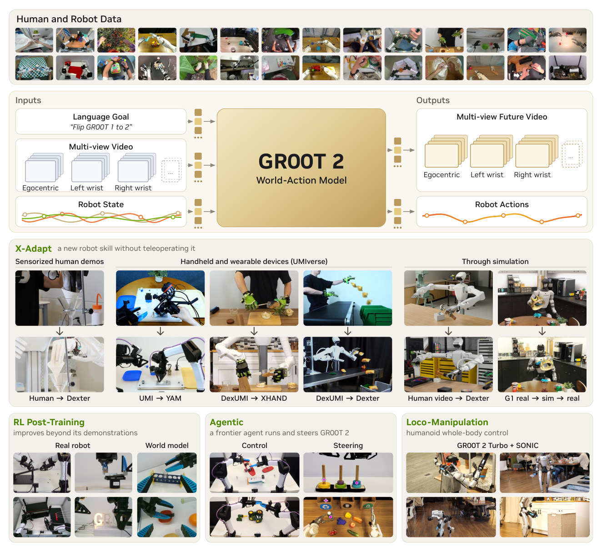
怎么读这张图
- 最上 Human and Robot Data：pretraining 的数据，人类 egocentric 视频、手持 UMI、机器人遥操作混在一起。
- 第二排 Inputs → GR00T 2 → Outputs：左边是 language goal、multi-view video（egocentric 加左右 wrist）、robot state；右边是 multi-view future video 和 robot actions。例子里就是 YAM 的相机历史进，未来帧和 action chunk 出。
- 第三排 X-Adapt：不遥操作就教会新技能的三类来源。Sensorized human demos（Human → Dexter）；handheld and wearable devices（UMI → YAM 就是例子，另有 DexUMI → XHAND / Dexter）；through simulation（Human video → Dexter，G1 real → sim → real）。
- 最下三格：RL Post-Training（真机和 world model 里）、Agentic（Control 和 Steering）、Loco-Manipulation（GR00T 2 Turbo + SONIC），对应 Stage 4、5、6。
flowchart LR D["UMI 示范
有任务，没有 YAM"] --> W["同一个 WAM
视频预测学任务
动作头学身体"]:::win P["YAM play data
有 YAM，没有任务"] --> W W --> R["想象 YAM 在装车
再照着出动作 · SR 60%"]
Level 2 · Stages
6 个 stage，外加一条贯穿的测量
flowchart TD S1["1 · Model
视频 + 指令 + state
→ 未来帧 + 动作"] S1 --> S2["2 · Pretrain
402,730 h 人类视频
+ 10,184 h UMI
+ 23.5k h 遥操作"] S2 --> S3["3 · X-Adapt
75 条 UMI 示范
→ Dumptruck 60%"] S3 --> S4["4 · Post-train
Tractor：SFT 51
→ DAgger 71 / 100"] S4 --> S5["5 · Agentic
agent 接管修复
→ 97 / 100"] S5 --> S6["6 · Deploy
YAM 551 → 180 ms
G1 机载 124 ms"] M["贯穿 · Measure
盲测 A/B 的 Elo
digital twin r = 0.93"] M -.-> S2 M -.-> S4 M -.-> S6 click S1 href "#stage-1" click S2 href "#stage-2" click S3 href "#stage-3" click S4 href "#stage-4" click S5 href "#stage-5" click S6 href "#stage-6" click M href "#stage-all"
点击 stage 展开 Level 3 细节。虚线的 Measure 不是一步，是每一步选 checkpoint 时都在用的机制。
Level 3 · Details
每个 stage 的细节
Stage 1 Model：一个 DiT 同时出未来视频和动作 0.8 s 多相机视频 + 指令 + state → 未来帧 + action chunk
- Why：想让没有机器人动作的视频也能当监督，输出里就得有视频。
- Backbone：Cosmos-Predict2.5-2B，一个 2B 的 video diffusion transformer；视频、state、action 都变成同一条序列里的 token。
- Video：frozen Wan 2.1 VAE（时间压 4×，空间每维压 8×）；224×320 下每路相机每个 latent 帧是 280 个 token；过去帧当 context，未来帧被生成。
- Language：frozen Cosmos-Reason1 编码指令，transformer 通过 cross-attention 读它。
- State 和 action：每种身体一组小 MLP 把 state 和带噪的 action chunk 投进 transformer，一个 decoder 把输出 token 变回动作。
- Attention：video token 跨时间、跨相机互相看；action token 看全部 video token，包括正在生成的未来帧，所以动作跟着想象出来的未来走。
- 训练和推理：未来视频 latent 和动作各一个 flow matching loss；推理时视频去噪 1–2 步，动作 2–4 步。
- 视频稀，动作密：视频是 5 fps（0.8 s 历史 5 帧；Fig. 14 里未来 8 步，每步 0.2 s），动作是 30 Hz（48 步），两者覆盖同一段 1.6 s。
- Turbo 变体：同一个 2B transformer，换成 Wan 2.2 VAE（空间每维压 16×），latent 网格小 4 倍，action horizon 不变。
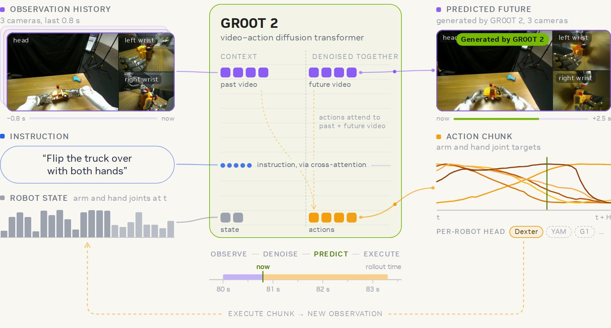
怎么读这张图
- 左列 OBSERVATION HISTORY / INSTRUCTION / ROBOT STATE：3 路相机最近 0.8 s、一句指令（图里是 “Flip the truck over with both hands”）、当前关节状态。
- 中间绿框：CONTEXT 一侧是 past video token；DENOISED TOGETHER 一侧是 future video 和 actions，一起去噪。虚线标着 “actions attend to past + future video”；指令走 cross-attention。
- 右列 PREDICTED FUTURE / ACTION CHUNK：模型生成的 3 路未来视频和一段动作曲线；下面的 PER-ROBOT HEAD（Dexter / YAM / G1）是每种身体各自的动作头。
- 底部：OBSERVE → DENOISE → PREDICT → EXECUTE，然后 “EXECUTE CHUNK → NEW OBSERVATION” 回到开头。
flowchart LR V["过去视频
YAM 4 路相机
各 5 帧 · 0.8 s"] --> T["一个 2B DiT
未来视频和动作
一起去噪"]:::win L["指令
Mount the wheels…"] --> T S["Robot state
YAM 关节和夹爪"] --> T T --> F["未来视频
每路相机的未来帧"] T --> A["Action chunk
48 步 · 1.6 s
先执行前 30 步"]
Running example 在这一步
YAM 的 top、左右 wrist、bottom 四路相机各 5 帧（0.8 s，224×320）加指令和当前状态进去；出来的是四路相机的未来帧和 48 步动作（30 Hz 下 1.6 s）。YAM 的 action 是 32 维：末端位姿、夹爪宽度、每臂 6 个关节。它先执行前 30 步，同时算下一段（§B.2、§E.3.3、§I.1）。
Stage 2 Pretrain：三种数据，三个训练阶段 人类视频 + UMI + 遥操作 → 一个跨身体的 checkpoint
- Why：先在很多身体上学会“同一件事的不同做法”，之后几十条示范才够用。
| 数据 | 规模 | 给模型什么 |
|---|---|---|
| Human-1M egocentric 人类视频 | 402,730 h，约 13.75M episode，51,500+ 采集者，123,000 个场景；其中 3,000 h 是对齐机器人视角的 in-lab 数据 | 物体、场景、动作的广度；tracked hand pose 当动作监督 |
| UMI-10K 手持 Gripper UMI | 10,184 h，942k episode，2,897 个任务 | 机器人格式的任务示范，含遥操作很少录到的动态、铰接、柔性操作 |
| 遥操作 多种机器人 | 23.5k h，1.16M episode：YAM 18.7k h，Sharpa 手 2.9k h，Wuji 手 1.3k h，G1 275 h，Franka（DROID） | 每种身体真正能执行的动作 |
flowchart LR P1["① 单视角视频
人类 ego 视频为主
只预测未来帧"] --> P2["② 多视角 video-action
加 state / action 模块
视频和动作一起学"] P2 --> P3["③ 机器人加权
机器人示范权重调高
YAM 最多"]
- ① Single-view video：从 Cosmos-Predict2.5-2B 出发，每个样本一个相机，只预测未来视频，先建立“手和物体怎么互动”的视觉先验。
- ② Multi-view video-action：接上每种身体的 state / action 模块；视频和动作都用 flow matching，只有带有效动作标注的样本才算 action loss。
- ③ Robot-upweighted：继续联合训练，机器人示范（尤其 YAM）权重更高，人类和灵巧手数据保留。
- 标注：Flora 的三个模型切动作边界、给每段写祈使句指令、打 reward；WGO-Bench 上时间分割 F1 是 50.3，第二名 GPT-6 Astra 是 46.0。
- 算力：主 pretraining run 用了 1,024 张 GB300 GPU（集群共 2,016 张）。
Running example 在这一步
YAM 在 pretraining 里有 18.7k h 遥操作，但从没被遥操作做过 Toy Dumptruck。UMI-10K 让“手持夹爪加 fisheye 视角”的画面在 pretraining 里已经见过，并且和 YAM 的抓取对齐过（§E.3.4）。
Stage 3 X-Adapt：不遥操作，学会新任务 75 条 UMI 示范 + YAM play data → YAM 上能跑的 Toy Dumptruck policy
- Why：遥操作每加一个任务都要占机器人、工位和操作员，而且动作慢，抛投这类动作根本示范不出来。
- 配方：示范给任务，目标机器人的 task-agnostic play data 给身体，cross-embodiment pretraining 把两者接上。
- Co-training（补外观和场景）：UMI 示范和 4 个通用 YAM 语料按 0.6 : 0.4 混着 post-train；YAM 语料里没有目标任务。
- Top view 从哪来：这里的 Gripper UMI 不只有腕部相机，还带一个广角 head camera 和一个 trigger camera；UMI 的 head、wrist、bottom 相机分别填 YAM 的 top、wrist、bottom 槽位（§E.3.1、Tab. 16）。Head 和 top 的差别没有做几何对齐，靠 co-training 吸收；论文没有单独消融这一路。
- 腕部视角对齐（补 sensing 的几何部分）：把 UMI 的 fisheye 重渲染成模仿 YAM wrist camera 的虚拟 pinhole 视角。
- 共享 action head（补 actuation）：UMI 动作改写成 YAM 的写法（抓取点位姿、归一化夹爪宽度），放进 YAM 那一行 action head 的前 20 维。
flowchart TD U["UMI 示范
75 条 · fisheye 腕部视角"] --> W["腕部视角对齐
重渲染成 YAM 的
pinhole 视角"]:::win W --> H["共享 action head
UMI 动作写成
YAM 的前 20 维"]:::win Y["YAM play data
4 个通用语料 · 无目标任务"] --> C["Co-training
UMI : YAM = 0.6 : 0.4"]:::win H --> C C --> R["YAM 上执行
Dumptruck SR 60%
Prog. 96"]
Co-training 里的两类样本，以 top 这一路相机为例
| 样本 | top 这一路里拍到什么 | 教给模型什么 |
|---|---|---|
| UMI 示范 装 Dumptruck，75 条 | 示范者头上的广角相机：桌面、玩具车、人的手臂和蓝色夹爪 | 任务：装轮子、上螺丝、电钻拧紧、翻面 |
| YAM play data 别的任务 | YAM 工位顶上的固定相机：YAM 的两条手臂 | 身体：YAM 长什么样、怎么动 |
| 部署时 训练里没有这种组合 | YAM 顶部相机，画面里是玩具车零件 | 模型要把上面两样拼起来；Fig. 14 检验的就是这一步 |
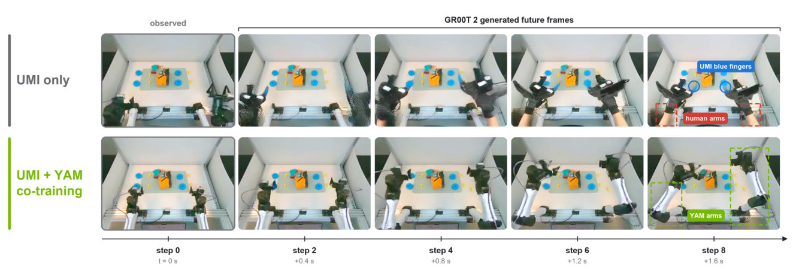
怎么读这张图
- 最左一列 observed：两个模型看到同一帧 YAM top camera。
- 上排 UMI only：只用 UMI 数据 post-train，预测的未来帧里伸进来的是 human arms 和 UMI blue fingers（红框、蓝框）。
- 下排 UMI + YAM co-training：预测的是 YAM arms（绿框）在装车。
- 横轴 step 0 → step 8：8 个未来步，共 1.6 s。play data 给了 world model 一个身体，任务才会被想象成 YAM 在做。
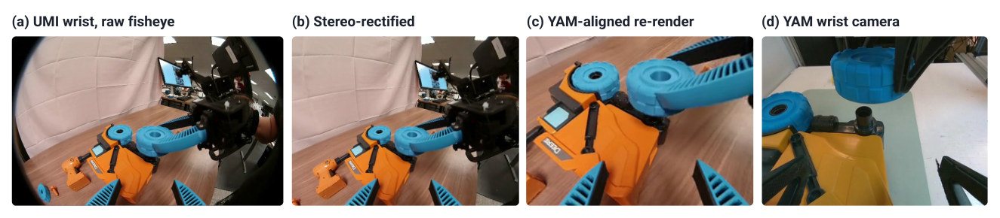
怎么读这张图
- (a) raw fisheye：UMI wrist camera 的原始画面，约 180°。
- (b) Stereo-rectified：pretraining 用的展开方式；320×240 下场景位置和 YAM 相机差 74–94 px。
- (c) YAM-aligned re-render：虚拟 pinhole 相机，焦距 202.96 px，向下俯约 27.1°，在 Isaac Sim 里用 112 对渲染拟合；误差降到 8–11 px。
- (d) YAM wrist camera：真机同一步。(c) 和 (d) 只是视场和朝向对上了，手指外观没对上；论文的结论是几何大致对齐就够。
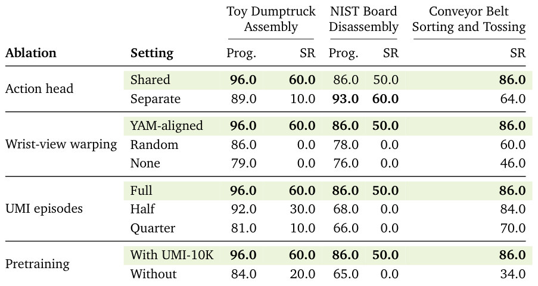
怎么读这张表
- 只看 Toy Dumptruck 的 SR 列：Action head，Shared 60 对 Separate 10；Wrist-view warping，YAM-aligned 60 对 Random 0、None 0；UMI episodes，Full 60、Half 30、Quarter 10；Pretraining，With UMI-10K 60 对 Without 20。
- 再看 Prog. 列：掉得少得多（96 → 79–92）。粗步骤还在，丢的是对孔、拧螺丝这种只容几毫米误差的步骤。
- NIST Board 是反例：Separate head 反而略好（60 对 50），因为示范里取螺母的手法在 YAM 语料里没有。
同一个配方的另外三条路（Fig. 4 的另外三列）
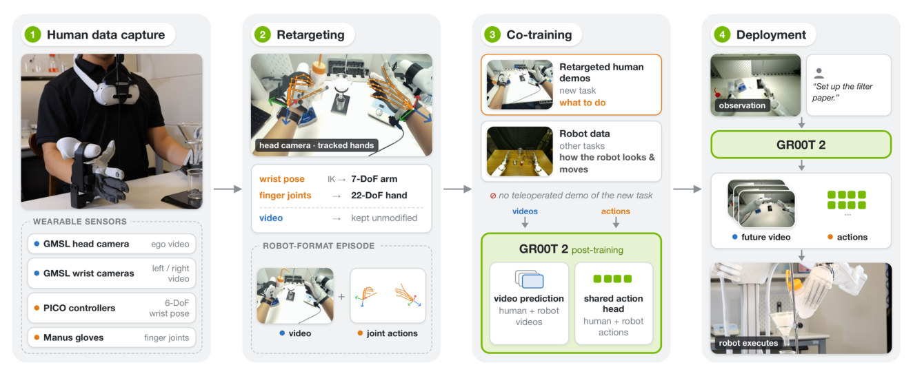
- ① Human data capture：GMSL 头部和腕部相机、PICO controller（6-DoF 腕部位姿）、Manus 手套（手指关节）。
- ② Retargeting：腕部位姿经 IK 给 7-DoF 手臂，手指关节映射到 22-DoF 手，视频不改。
- ③ Co-training：retargeted human demos 标着 “new task · what to do”，robot data 标着 “other tasks · how the robot looks & moves”；两者 1 : 1 采样，共用一个 action head。
- ④ Deployment：观测加 “Set up the filter paper.” 进去，出未来视频和动作。和例子是同一个配方，只是示范设备从 UMI 换成手套。
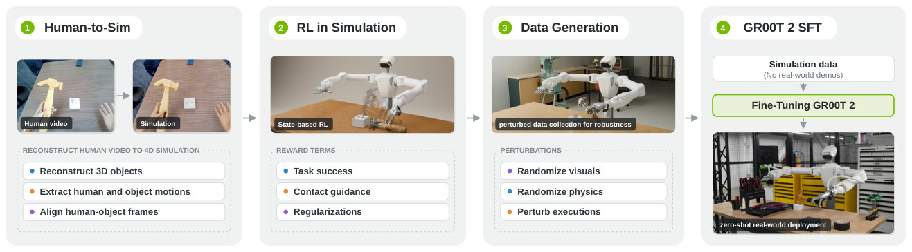
- ① Human-to-Sim：一段人类视频，重建 3D 物体、手和物体的运动，对齐坐标系（NVIDIA Video to Data）。
- ② RL in Simulation：state-based RL expert，奖励是任务成功、接触引导、正则（CHORD）。
- ③ Data Generation：随机化视觉和物理，加动作扰动和瞬移，让数据里有纠错；每个任务 1.5k 条。
- ④ GR00T 2 SFT：只用仿真数据 fine-tune，直接上真机。
- DexUMI → XHAND：外骨骼一比一复刻 XHAND1 Pro-U 的 16 个自由度，所以不需要 play data；训练时把视频里外骨骼的绿色区域随机改色，代替离线 inpaint；指尖力映射成关节力矩，预测的力矩越大，关节刚度越低。
Running example 在这一步
75 条 UMI 示范加 YAM play data，YAM 端到端装好 Toy Dumptruck：10 次里 6 次成功，Prog. 96（Tab. 4）。只留四分之一示范（约 20 条）时还有 1 次成功，Prog. 81（Tab. 17）。
Stage 4 Post-train：few-shot、SFT、DAgger、RL 少量遥操作示范或真机 rollout → 更准、更稳的任务 policy
- Why：pretraining 给广度；精细对位和接触要靠任务数据和交互来补。
- Few-shot：rank-32 LoRA 加在 transformer 的每个 linear 层，其余冻结；每条 episode 切成 100 个窗口，按冻结模型在该窗口上的 loss 加权采样，多练抓取、插入这些难段；单张 RTX 5090 约 30 分钟，训完把 adapter 合并回权重。
- SFT 和 DAgger：在 long-horizon 任务的遥操作示范上 post-train，再补纠错数据。
- RL，直接改 GR00T 2：rollout 时只给 action 去噪加噪声来探索；同一个 context（任务加场景布局）收多次尝试，回报是成功 1、失败 0；每次尝试的 advantage 是自己的回报减去“同组其他尝试和这个 context 历史均值”的平均。
- Self-imitation：把 GRPO 过程中成功的 rollout 留下，从同一个 SFT 起点再做一轮普通的 video + action 监督训练。
- Residual RL，不改 GR00T 2：冻结它，用 SAC 训一个小 actor，在指定阶段给末端目标加有界修正；训练时有人偶尔纠正。
- Neural simulation：把 DreamDojo world model 适配到目标任务，GR00T 2 在里面做 RL：四个真机任务平均 43% → 72%，十个 RoboLab 任务 51% → 71%（§4.5.3）。
flowchart TD S["SFT 后的 GR00T 2
Fixed-Pipe Fittings 66%"] S --> R1["CPS 探索
只给 action 去噪加噪声"] R1 --> R2["GRPO
组内比成败 · 86%"] R2 --> R3["Self-imitation
成功 rollout 上
再监督训练 · 88%"]:::win S --> R4["Residual RL
冻结 GR00T 2
SAC 学修正 · 76%"]
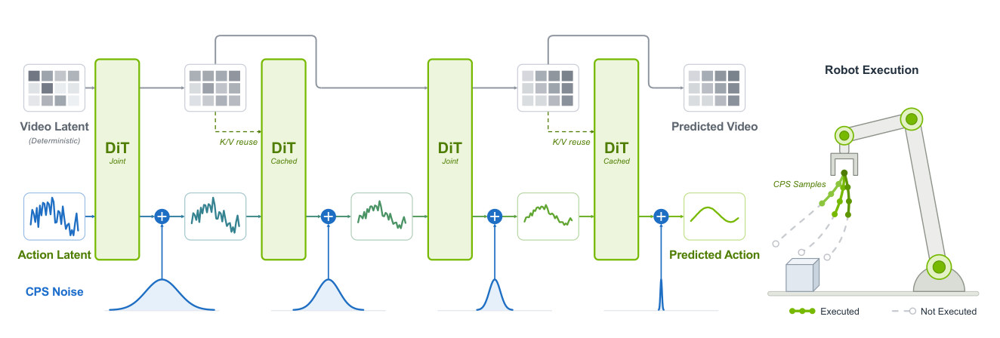
图里的符号
| 符号 | 白话 | 在例子里 |
|---|---|---|
| Video Latent (Deterministic) | 未来视频的压缩表示；去噪时不加随机性 | YAM 各路相机的未来帧 |
| Action Latent | 一段动作，从纯噪声一步步变干净 | YAM 的 action chunk |
| DiT · Joint | 视频和动作一起过一遍 transformer | 4 次去噪里的第 1、3 次 |
| DiT · Cached / K/V reuse | 只更新动作；视频那部分的 attention 结果直接复用上一次 | 第 2、4 次 |
| CPS Noise | 每次动作去噪后加的一点高斯噪声，越往后越小 | 让同一摆放下的几次尝试走出不同动作 |
| Executed / Not Executed | chunk 里真正送去执行的前几步，和后面不执行的部分 | 噪声只加在执行的那几步上 |
怎么读这张图
- 上面一行是视频：只在两次 Joint 更新，全程确定。
- 下面一行是动作：四次都更新，每次之后加噪声，蓝色钟形越来越窄。
- 右边 Robot Execution：绿色点是被执行的动作样本，灰色是没执行的。探索只发生在动作上，想象的未来不被扰动。
- 训练：只在两次 Joint 上比较新旧 policy 对已执行动作的概率，并回传梯度。
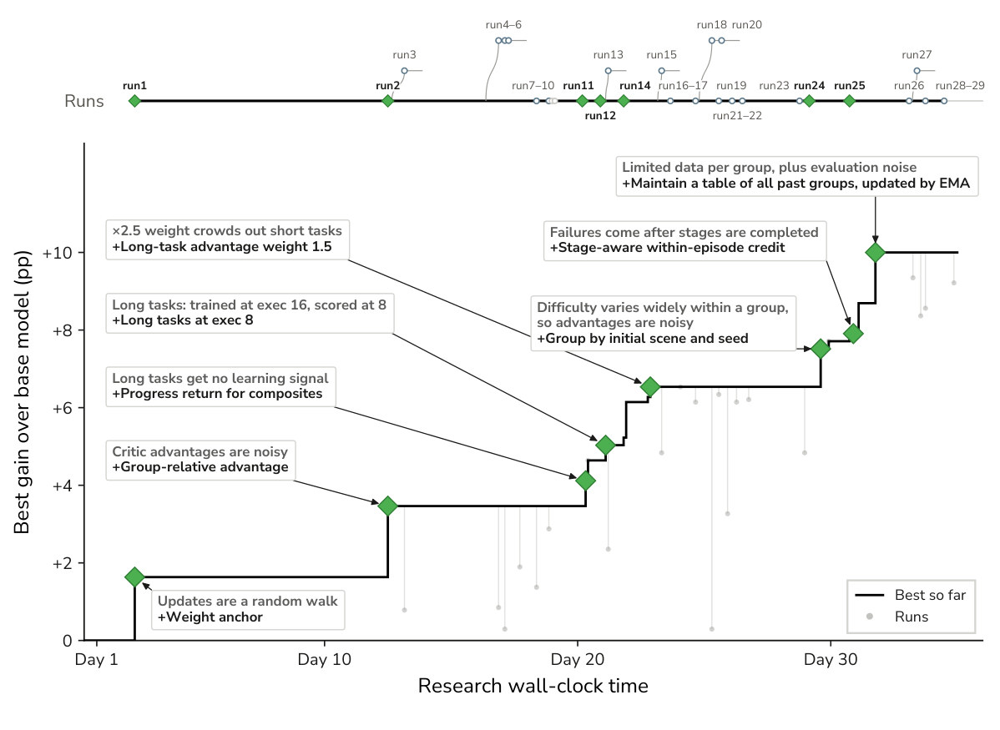
怎么读这张图
- 坐标：横轴 research wall-clock time，纵轴 best gain over base model（百分点）。
- 每个绿色菱形：一次被采纳的改动。灰字是 agent 诊断出的问题，黑字是改法，例如 “Critic advantages are noisy → +Group-relative advantage”。
- 累计提升：1.6 → 3.5 → 4.1 → 5.0 → 6.5 → 7.5 → 7.9 → 10.0 个百分点；最后一步是 “Maintain a table of all past groups, updated by EMA”。
- 顶上的 Runs：29 次 run，灰点是没被采纳的。每轮 agent 提最多 4 个互不相关的假设，各自带预期结果和证伪标准；每轮最多采纳一个。
Running example 在这一步
换成 Toy Tractor（这次有遥操作）。摆好布局的 benchmark 上，SFT 是 Prog. 63.8、SR 45.0（Tab. 1a）；每次把零件随机倒在桌上，SFT 是 51/100，加 DAgger 后 71/100（Fig. 7）。RL 用的是同一台 YAM 的 Fixed-Pipe Fittings：SFT 66% → self-imitation 88%（Fig. 5）。Few-shot 那条在 Dexter 上：50 个新任务，5 条示范后 95%（Fig. 2）。
Stage 5 Agentic：S2 agent 调用和引导 GR00T 2 一句任务指令 + 相机画面 → agent 用 GR00T 2 和 CaP 把长任务做完
- Why：长任务里误差会累积，会出现没见过的状态；语言也常说不清是哪个物体、放哪、用哪只手。
- 分工：agent（S2）决定做什么：拆步骤、看进度、写代码。GR00T 2（S1）决定怎么做：难以脚本化的接触操作。S2 不在 GR00T 2 模型里，是外接的。
- 真机：GR00T 2 是默认执行者；agent 发现掉件或卡住，就停掉它，用 code-as-policy（CaP）skill 修好，验证，再交还。
- 仿真：ASPIRE 先找出 task-level program，把 GR00T 2 调用和感知、几何推理、CaP primitive 串起来；每个任务在 dev seed 上选“程序”还是“GR00T 2 单独跑”当默认执行者。
- 执行权：只有一个 control worker 发指令，GR00T 2 和 CaP 不会同时控制机器人。
- 加 skill 不用重训：CaP skill 可以在测试时加进去；真机上的 skill 由 ASPIRE 在真机上学，或在仿真里学完再迁过来。
| 层 | 是谁 | 管什么 | 多久动一次 |
|---|---|---|---|
| System 2 | 外接的 reasoning agent：§G.1 是一个 frontier multimodal coding agent，§G.2 是 GPT-6 Astra；Fig. 9 写明可选，也可以是脚本或人 | 拆步骤、看进度、判断每步做完没有、写 CaP 代码、出错时接管 | 按需：每次 tool call，或每步结束时问一次（垃圾分类一个 episode 中位数 9 轮） |
| Harness | 夹在中间的规则程序（§G.2） | 把 S2 的指令和点传给 S1，决定什么时候再问 S2 | 跟着 S1 的每步 |
| System 1 | GR00T 2 本身，那个 2B 的 WAM（G1 上是 Turbo） | 按当前指令做接触操作，出 action chunk | YAM、Dexter：一次出 48 步（30 Hz，1.6 s），执行前 30 步后换下一段 |
| System 0 | 只在 G1 上有：SONIC whole-body controller | 把 latent token 变成关节目标，管平衡 | 50 Hz；再下面是 1000 Hz 的关节 PD |
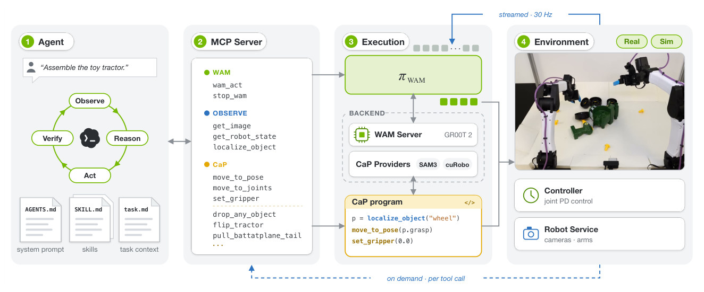
怎么读这张图
- ① Agent：收到 “Assemble the toy tractor.”，在 Observe → Reason → Act → Verify 里循环。底下三份文件：AGENTS.md（system prompt）、SKILL.md（skills）、task.md（task context：阶段、成功标准、已知失败方式）。
- ② MCP Server：三组 tool。WAM：
wam_act、stop_wam。OBSERVE：get_image、get_robot_state、localize_object。CaP：move_to_pose、move_to_joints、set_gripper；虚线下面是任务专用 skill，如drop_any_object、flip_tractor。 - ③ Execution：要么是 πWAM（GR00T 2），要么是一段 CaP program，图里的例子是
p = localize_object("wheel")，move_to_pose(p.grasp)，set_gripper(0.0)。Backend 是 WAM Server 和 CaP Providers（SAM3、cuRobo）。 - ④ Environment：Real 和 Sim 用同一套接口；下面是 Controller（joint PD control）和 Robot Service（cameras · arms）。
- 两条蓝线都是观测的去向：实线 “streamed · 30 Hz” 从 Environment 指向 πWAM 上方的观测缓冲，policy 一直拿到 30 Hz 的观测；虚线 “on demand · per tool call” 指向 MCP Server，agent 调 tool 时才取一次。
- 动作走灰线：πWAM 右下角的绿色方块是 action chunk，它和 CaP program 的指令汇成一路进 Environment 的 Controller。
wam_act，02:04:44 stop_wam，02:05:05 起 CaP skill，约 02:07:35 交还，02:08:11 确认螺丝拧好。flowchart TD O["Observe
get_image
get_robot_state"] --> R["Reason
小轮装好了，螺丝横躺在轮毂上"] R --> A1["Act · stop_wam
停掉 GR00T 2 的重复插入"]:::win A1 --> A2["Act · CaP skill
cap_program_approach_
screw_on_tractor"]:::win A2 --> V["Verify
手腕已到螺丝上方，没抓
车身稳、两手空"] V --> W["Act · wam_act
GR00T 2 自己把螺丝
摆正、插入、拧紧"] W --> O
Visual steering：除了语言，再给 GR00T 2 画两个点
- 接口：agent 每一步给出用哪只手、grasp 点、release 点（scene camera 上的像素坐标）；抓姿、接近和中间的动作都由 GR00T 2 生成。
- 怎么传：直接把点画在当前这帧图上，不走单独的输入通道，因为 GR00T 2 对条件帧里的细节很敏感。
- Harness：夹在 agent 和 GR00T 2 之间的规则程序。三种时候再问 agent：手松开了物体、一个快的 VLM 判断这步做完了、45 s 还没结束。
- 训练：从 pretrained checkpoint mid-train 20k 步；点的标注从已有示范里的夹爪开合（YAM）或指尖接触力（Dexter）自动生成，不需要新数据。
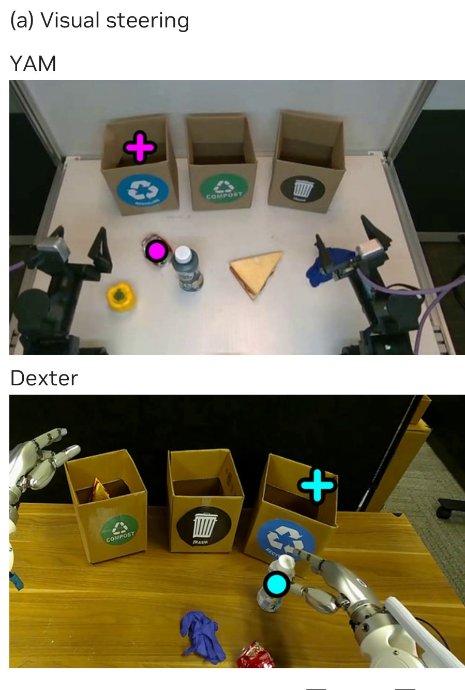
- 实心圆：grasp 点，画在要拿的物品上。十字：release 点，画在它该进的箱子上。
- 颜色：magenta 是左臂，cyan 是右臂；只标要动的那只手。
flowchart LR P["Agent · S2
GPT-6 Astra
每步给手 + 两个点"] --> H["Harness
把点画到相机帧上
决定何时再问 agent"] H --> G["GR00T 2 · S1
生成接近、抓、
运、放的动作"] G -.-> H
Running example 在这一步
Toy Tractor，零件乱倒：100 次里 97 次装好，SFT + DAgger 是 71（Fig. 7）。3 次失败：一次是 GR00T 2 把小轮装到了后轴上，agent 停得晚，CaP 撤不回；两次是螺丝掉下桌或卡死（§G.1）。Visual steering 的例子换成 YAM 垃圾分类：只给任务指令 0/20，加 agent 的逐步语言 0/20，再加点 17/20（Tab. 22）。
Stage 6 Deploy：实时推理，Turbo 和 SONIC checkpoint → 机器人上连续、够快的控制
- Why：WAM 要编码多路视频、迭代去噪视频和动作，比 VLA 慢；humanoid 还必须在机载 edge GPU 上跑。
- 去掉重复计算：指令不变就复用 text feature；timestep conditioning 预先算好；只更新动作的去噪步复用上一次视频步的 attention key/value。
- 编译和量化：VAE encoder 和 transformer 编成 TensorRT engine，用 CUDA graph 回放；部分层用 FP8；减少去噪步数。
- 服务路径：streaming VAE 和 prefetch，把视频编码挪到预测请求之前。
- 动作怎么到 30 Hz：模型大约每秒才推理一次。每次出 48 步的 chunk（1.6 s），每一步是 30 Hz 的一个控制周期（训练轨迹本身是 30 Hz）；只执行前 30 步（正好 1 s），后 18 步不执行。Client 把 chunk 缓存起来，按控制器的频率逐条下发，同时异步请求下一段（§K.5.3）。
- 为什么 video model 跟得上：去噪步数很少（YAM 是视频 2 步、动作 4 步）；未来视频只在 latent 里去噪，VAE decoder 只在可视化时才用，不算进预测延迟（Fig. 60）。
- Noisy-prefix RTC：新 chunk 以已经承诺执行的动作前缀为条件，所以两段接得上；fine-tune 时给前缀加高斯噪声（σ = 0.1），只多训 5k 步。
- 分阶段提速：agent 给 reach、grasp、transport、screw 这些阶段各找一个速度；一个轻量 subtask predictor 判断 chunk 落在哪些阶段，再按速度表重定时。Dexter 三个任务的完成时间 95 → 81 s、80 → 66 s、184 → 137 s（Tab. 29）。
flowchart LR B["Eager BF16
YAM · RTX 5090
550.96 ms"]:::gap --> O["复用 + TensorRT + FP8
179.79 ms · 3.06×"]:::win O --> R["RTC + 分阶段提速
chunk 之间不断
比示范做得更快"]
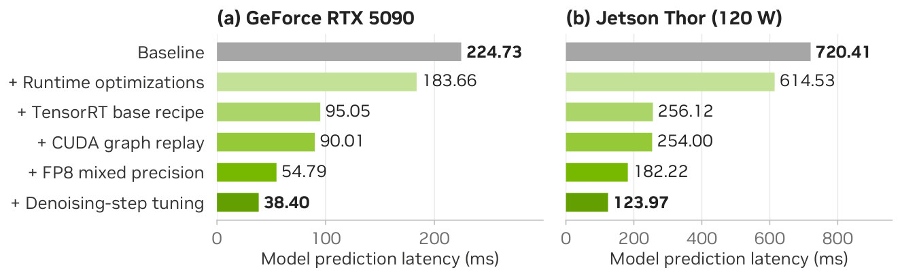
怎么读这张图
- 从上到下：每一条在上一条的基础上再加一项优化。(a) RTX 5090：224.73 → 38.40 ms。(b) Jetson Thor 120 W：720.41 → 123.97 ms。
- 最大的一刀：TensorRT base recipe（183.66 → 95.05，614.53 → 256.12）。
- 最后一条 Denoising-step tuning：去噪从“视频 2 步、动作 4 步”减到“视频 1 步、动作 2 步”。
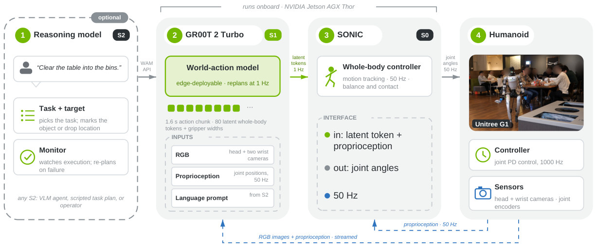
怎么读这张图
- ① Reasoning model（S2，可选）：“Clear the table into the bins.”，选任务和目标，看执行，失败就重规划。
- ② GR00T 2 Turbo（S1）：输入 RGB（head 加两个 wrist camera）、proprioception、language prompt；输出 1.6 s 的 action chunk，是 80 个 latent whole-body token 加夹爪宽度；约 1 Hz 重规划；跑在 Jetson AGX Thor 上。
- ③ SONIC（S0）：whole-body controller，输入 latent token 和 proprioception，输出关节角，50 Hz，管平衡和接触；跑在 Jetson Orin NX 上。
- ④ Humanoid：Unitree G1，关节 PD 控制 1000 Hz。除 S2 外都在机器人身上。
Running example 在这一步
YAM 上 GR00T 2 的预测延迟中位数：RTX 5090 上 550.96 → 179.79 ms，DGX Station GB300 上 386.06 → 54.00 ms（Tab. 27）。例子在这里延伸到 G1：Turbo 在机载 Jetson Thor 上 123.97 ms，约每秒重规划一段 1.6 s 的 whole-body token，SONIC 以 50 Hz 执行。
贯穿 Measure：GearArena 盲测和 digital twin 候选 checkpoint → 哪个更好、好多少、有多确定
- Why：真机成功率随工位、操作员、硬件、日期漂移，不同 session 的绝对数字不能比。
- GearArena：一次盲测 A/B 在同一场景、由同一操作员、几分钟内以随机顺序跑 2–4 个 checkpoint，漂移在比较里抵消。
- 从比赛到排名：每对 checkpoint 记一次胜负（同分算平局），用 Bradley–Terry 拟合成 Elo；置信区间靠 bootstrap 重采样任务。
- 规模：195 个 A/B campaign，16,044 个评分 episode，11,767 次两两比较，10 台 YAM 工位，20 多位操作员，71 个 checkpoint（2026 年 7–11 月）。
- 结论：GR00T 2 比 π0.5 高 236 Elo（95% CI 171–325，约 80% 胜率），比 GR00T 1.7 高 95 Elo（CI 50–148）。
- Digital twin 怎么建：agent 用 SimFoundry 的工具，从真机视频、3D 扫描、照片重建场景和资产，人审核；跑在 Isaac Lab Arena + Newton（MuJoCo Warp solver）上。
- 装配资产：两套 collider，粗的管抓取和桌面接触，精细的 SDF 管紧配合和拧螺栓；零件到位后建一个 joint 把它们连住。
- 验收：不带机器人直接施力走一遍装配；抓取和跌落测试；在仿真里回放真机示范。
- 用在哪：pretraining 中途用 25 个仿真任务跟踪 checkpoint，把最终候选缩到 3 个再上真机；数据管线改动和推理设置先在仿真里筛。
flowchart LR C["新 checkpoint
YAM generalist"] --> S["Digital twin 先筛
25 个任务 × 10 次"]:::win S --> A["GearArena 盲测 A/B
同场景、同操作员
→ Bradley–Terry Elo"]:::win
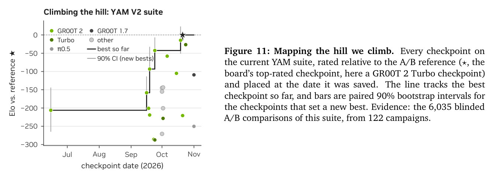
怎么读这张图
- 每个点：一个 checkpoint；横轴是保存日期，纵轴是相对榜首（★）的 Elo。
- 颜色：浅绿 GR00T 2，深绿 Turbo，黑 GR00T 1.7，灰 π0.5 和 other。
- 黑色台阶线：到那天为止最好的 checkpoint。四个月爬了 206 Elo，现在的榜首对 6 月那个的胜率约 77%。
- 依据：这个 suite 上的 6,035 次盲测 A/B 比较，来自 122 个 campaign。
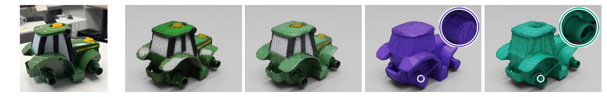
怎么读这张图
- 从左到右：实物照片 → 输入扫描 → 重建的 visual asset → handling collision hulls（紫）→ fitting SDF（青）。
- 圆形特写：同一根轮轴。紫色是粗的实心形状，抓取够用；青色保留了孔和螺纹，拧螺丝和插入要用它。
Running example 在这一步
Toy Tractor、Toy Plane、Hot Wheels 都被重建成带螺丝和电钻的仿真任务（Fig. 62）。Toy Plane 的 digital twin 用来开发 agent 的 recovery skill，再迁到真机（§J.2.4）。选哪个 YAM checkpoint，由 YAM V2 suite 上的盲测 A/B 决定。
Recap：例子覆盖了论文的哪些 idea
| 论文里的 idea | 例子里在哪体现 |
|---|---|
| WAM：联合预测未来视频和动作 | Stage 1：YAM 四路相机的历史 → 未来帧 + 48 步动作 |
| 人类视频也是监督（Human-1M） | Stage 2：402,730 h 进 pretraining；E1 里从 0% 加到 100%，真机 SR 18 → 41% |
| Cross-embodiment pretraining 先把身体对齐 | Stage 2、3：去掉 UMI-10K，Dumptruck 60% → 20% |
| X-Adapt：示范给任务，play data 给身体 | Stage 3：75 条 UMI 示范 + YAM play data → 60% |
| 其他 X-Adapt 路线（手套、DexUMI、human → sim → real） | Stage 3 延伸：换成 Dexter 和 XHAND（Fig. 12、16） |
| Few-shot LoRA | Stage 4 延伸：Dexter 的 50 个新任务，5 条示范 95% |
| SFT 和 DAgger | Stage 4：Toy Tractor 乱倒零件 51 → 71/100 |
| 真机 RL（CPS、GRPO、self-imitation、residual） | Stage 4 延伸：同一台 YAM 的 Fixed-Pipe Fittings 66 → 88% |
| AutoRL 和 DreamDojo | Stage 4：recipe 由 research agent 找到；world model 里做 RL |
| Agentic control（MCP、CaP recovery） | Stage 5：螺丝横躺 → stop_wam → CaP → 交还；97/100 |
| Visual steering（WAM API） | Stage 5 延伸：YAM 垃圾分类 0/20 → 17/20 |
| 实时推理、RTC、分阶段提速 | Stage 6：YAM 550.96 → 179.79 ms |
| GR00T 2 Turbo + SONIC | Stage 6 延伸：换成 G1，机载 123.97 ms |
| GearArena 和 digital twin | 贯穿：tractor 的仿真资产；盲测 A/B 选 checkpoint |
Results
广度来自 pretraining，可靠性来自 RL 和 agent
顺序同论文：E1 人类视频有没有用 → E2 没见过的任务 → E3 long-horizon post-training → E4 零遥操作 → E5 真机 RL → E6 agent → E7 visual steering → E8 humanoid → E9 仿真能不能代替真机。比的主要是真机成功率（SR）和任务进度（Prog.），E9 比相关系数。
E1Pretraining 里的人类视频越多，机器人越好吗？§4.2.1 · §C.1.5
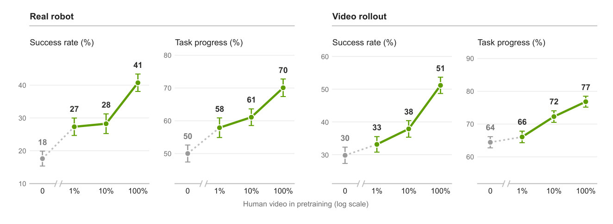
- 说明什么
- 成功率更高，而且没饱和。Human-1M 用 0% / 1% / 10% / 100%：真机 SR 18 → 27 → 28 → 41%，Prog. 50 → 58 → 61 → 70；video rollout SR 30 → 33 → 38 → 51%。
- 在故事里
- “没有机器人动作的视频也能教机器人”的直接证据，WAM 这条路的前提。
- 指标
- 真机：操作员判成败，VLM 打任务进度。Video rollout：模型自回归生成视频，VLM 判成败和进度。误差条 ±1 SEM。
- 怎么评测
- 72 个 Dexter 任务：22 个 OOD 指令任务，50 个 Dexter 训练数据里没有的任务；真机每任务 3 次。
- 四个模型只差 Human-1M 的比例；同样的 Dexter 遥操作数据，post-train 3 个 epoch。
- 0% 的模型整个跳过 human-video 阶段，所以 0 → 1% 这一步还混着“有没有这个阶段”的差别。
E2目标机器人没做过的任务，零样本和几条示范能到多少？§3.1 · §A.3
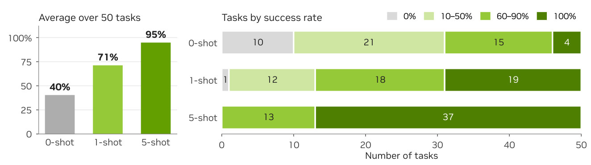
- 说明什么
- 零样本能做一部分，5 条示范基本学会。0-shot 40%（40 个任务至少成功一次）→ 1 条示范 71% → 5 条 95%（37 个任务 100%）。
- 在故事里
- 别的身体做过的任务，能迁到没做过它的 Dexter；零样本的失败多半只差一步的精度。
- 指标
- Success rate，50 个任务平均。
- 怎么评测
- Dexter-50：Dexter 自己的数据里没有，但 YAM 遥操作或人类视频里有。0-shot 只给指令。
- 1-shot、5-shot：rank-32 LoRA，单张 RTX 5090 约 30 分钟，所有任务同一套超参。
- 这 50 个任务是从“5 条示范能学到 80% 以上”的任务里挑的，所以 5-shot 的 95% 一部分是选出来的（论文自己说明）。这张图没有 baseline。
E3Long-horizon 的精细任务，post-train 后比 baseline 强多少？§3.1 · §A.1
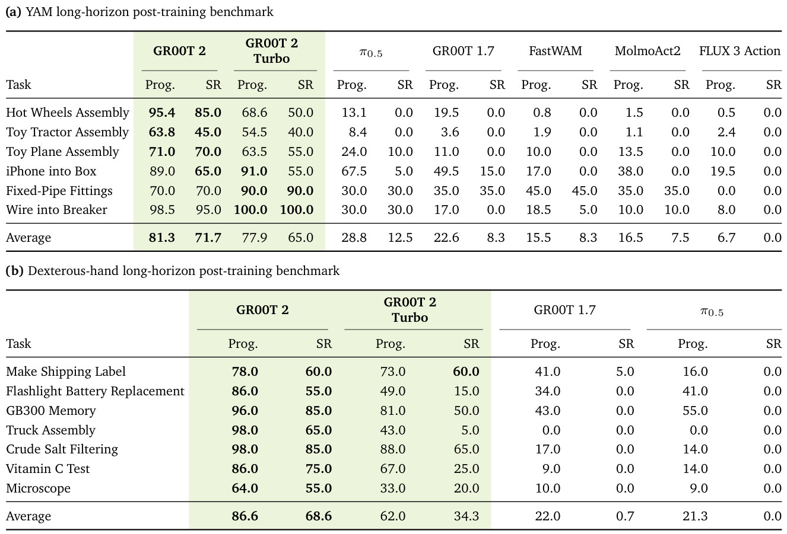
- 说明什么
- 成功率高出一个量级。YAM 六个任务平均 SR 71.7%，baseline 最高 12.5%（π0.5）；Dexter 七个任务 68.6%，baseline 最高 0.7%（GR00T 1.7）。Toy Tractor：63.8 / 45.0，五个 baseline 的 SR 都是 0。
- 在故事里
- pretraining 的收益在 post-training 之后还在；Turbo 在 YAM 上接近（65.0%），在灵巧手上掉到 34.3%。
- 指标
- Prog. 是所有试验的平均任务进度，SR 是成功率，都是 0–100。
- 怎么评测
- YAM 每个结果最多 20 次；Hot Wheels 有 24 个阶段。
- Baseline：π0.5、GR00T 1.7、FastWAM、MolmoAct2、FLUX 3 Action；它们各自怎么 post-train，正文没展开。
- 对 GR00T 2 有利的一处：Dexter 的 Truck Assembly 用的是改过、更容易的起始场景；原场景上 GR00T 2 是 7/20，Prog. 94.0。
E4目标任务一条遥操作都没有，能学会吗？§3.2 · §B
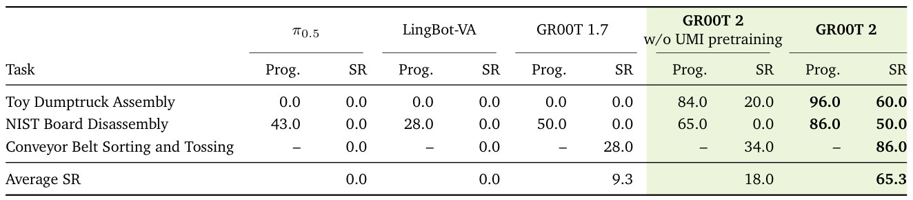
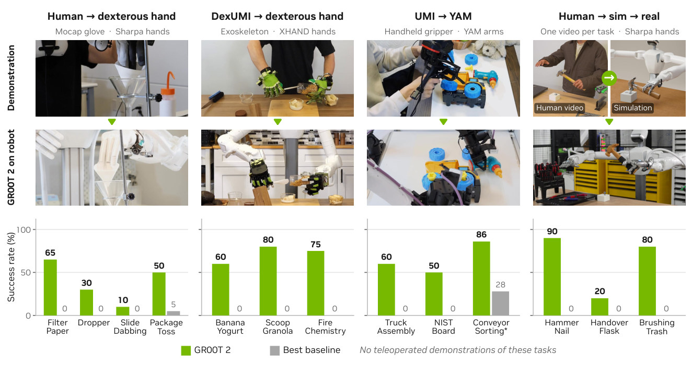
- 说明什么
- 能学会，baseline 学不会。Toy Dumptruck 60%（Prog. 96），π0.5、LingBot-VA、GR00T 1.7 都是 0%。四条路：手套 → Dexter 65 / 30 / 10 / 50；DexUMI → XHAND 60 / 80 / 75；UMI → YAM 60 / 50 / 86；一段人类视频 → sim → real 90 / 20 / 80。最好的 baseline 最高 28。
- 在故事里
- 论文的中心论点 X-Adaptability。Fig. 27 里再加 10 条遥操作，Filter Paper 从 65% 到 95%：遥操作是补充，不是替代。
- 指标
- SR 是端到端成功率，Prog. 是平均子阶段得分；任何人工干预算失败。Conveyor 的 SR 是 50 个物品里分对的比例，不是成功的试验比例。
- 怎么评测
- Dumptruck 和 NIST Board 各 10 次；手套那列每任务 20 次；Hammer 那列真机 10 次。
- 每个 baseline 用同样的 post-training 数据、recipe 和步数。
- “w/o UMI pretraining” 那个 checkpoint 来自更早的 pretraining run，样本数、机器人配比、模型细节也不同，差距不全来自 UMI 数据（§E.2）。
E5真机 RL 能把接触密集的任务再往上推吗？§3.3 · §F.4
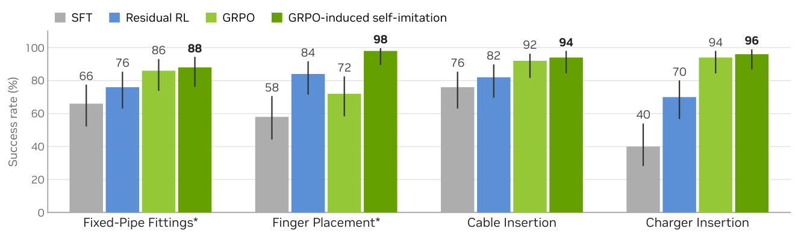
- 说明什么
- 成功率从 40–76% 到 88–98%。Self-imitation：Fixed-Pipe Fittings 88，Finger Placement 98，Cable Insertion 94，Charger Insertion 96；SFT 是 66 / 58 / 76 / 40。Residual RL 76 / 84 / 82 / 70。
- 在故事里
- 示范之外，靠和真实世界交互补 precision；这些技能在 E6 里被 agent 拼成更长的任务。
- 指标
- 成功率，每根柱 50 次，须线是 95% Wilson 区间。错位后恢复不了或超时算失败。
- 怎么评测
- 四种方法都从同一个 SFT checkpoint 出发；评测和训练 rollout 独立，评测时无人干预。
- GRPO 相对 SFT 的提升只在 Charger 和 Pipe 上显著；Cable（38 → 46 次）和 Finger（29 → 36 次）在这个样本量下不确定。
- Residual RL 训练时用了人的纠正；带 * 的两个任务评测时保留了 CPS 采样噪声。
E6加上 agent，long-horizon 任务能稳到什么程度？§3.4 · §G.1
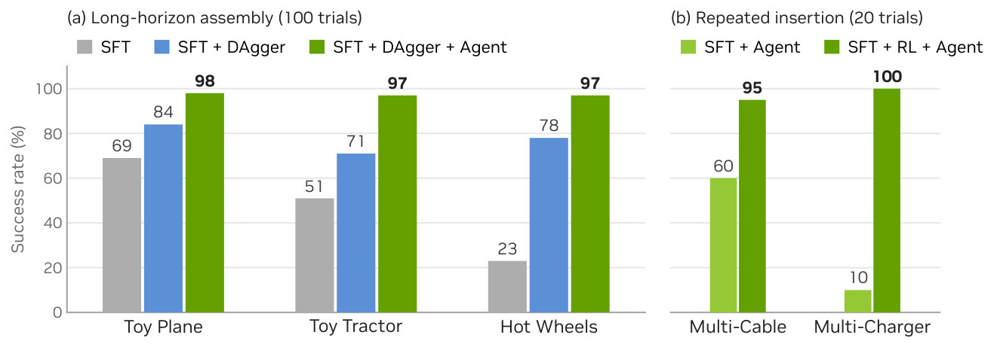
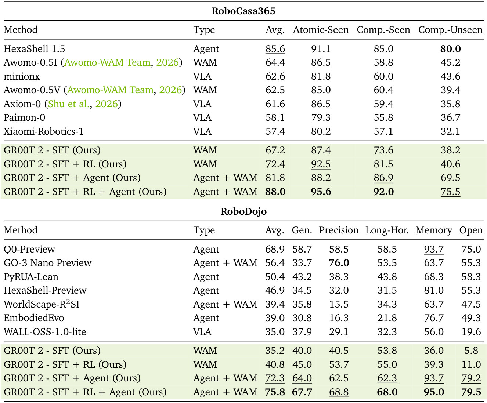
- 说明什么
- 更稳。Toy Plane / Tractor / Hot Wheels：SFT 69 / 51 / 23 → 加 DAgger 84 / 71 / 78 → 加 agent 98 / 97 / 97。五连插：把 SFT policy 换成 RL 后的，12/20 → 19/20（网线），2/20 → 20/20（充电器）。仿真：RoboCasa365 67.2 → 88.0（榜首 HexaShell 1.5 是 85.6），RoboDojo 35.2 → 75.8（Q0-Preview 68.9）。
- 在故事里
- 结论里的那句：可靠性来自互补的机制。Pretraining 给广度，DAgger 和 RL 补精度和接触，agent 补 memory、verification、recovery。
- 指标
- 真机：成功次数，需要人帮忙就算失败；五连插要五个全插对。仿真：success rate，RoboDojo 的平均是五个能力维度的官方均值。
- 怎么评测
- 每次试验前把所有零件随机倒在桌上，post-training 没见过这种布局；一次 5–14 分钟。和 Tab. 1a 摆好的布局不可比。
- 仿真：ASPIRE 用 15 个 dev seed 找程序，再在 30 个 dev seed 上选默认执行者；测试用 50 个 held-out seed。
- RoboDojo 只测了 layout bank 0；官方三库评测上 GR00T 2 SFT 是 35.5%（Tab. 31）。榜单数字截至 2026-11-06。
- Agent 放过的 episode 里很少失败（RoboDojo 1,320 个里 29 个）；它介入的 773 个里只救回 188 个（Tab. 20）。
E7在相机画面上标点，比只给语言更听话吗？§3.4 · §G.2
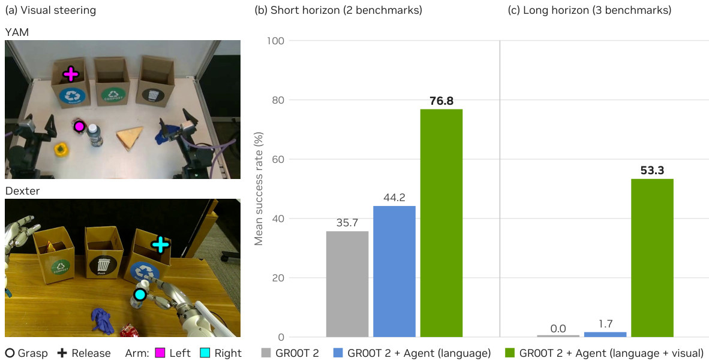
- 说明什么
- 指令跟随更准。各 benchmark 的平均：短任务 35.7 → 44.2 → 76.8%，长任务 0.0 → 1.7 → 53.3%。YAM 短任务 41.7 → 55.6 → 83.3；YAM 垃圾分类 0/20 → 0/20 → 17/20。
- 在故事里
- S2 和 S1 之间的接口不必只是语言；这就是论文叫 WAM API 的东西。
- 指标
- 短任务：pass@1，每条指令 3 次试验的平均成功率。长任务：五件物品全部完成才算成功。Fig. 8 是各 benchmark 成功率的等权平均。
- 怎么评测
- YAM 短任务每个设置 144 次：24 对 counterfactual 指令，同一场景只改要求。Dexter 64 次。
- Agent 是 GPT-6 Astra，zero-shot，每个 episode 一段对话；一个 episode 的 agent 花费中位数约 0.26 美元（YAM），机器人 38% 的时间在等它。
- Dexter 短任务用的是更早的模型实现；YAM 长任务的三个设置不在同一工位、同一操作员下评测。
- 点不说“怎么做”：action 类指令 55.6 → 72.2，grasp 类 27.8 → 55.6，提升明显更小。
E8Turbo 在 humanoid 上行不行，会不会用仿真数据？§3.5 · §H
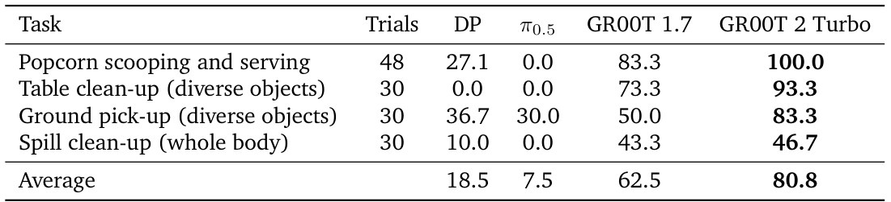
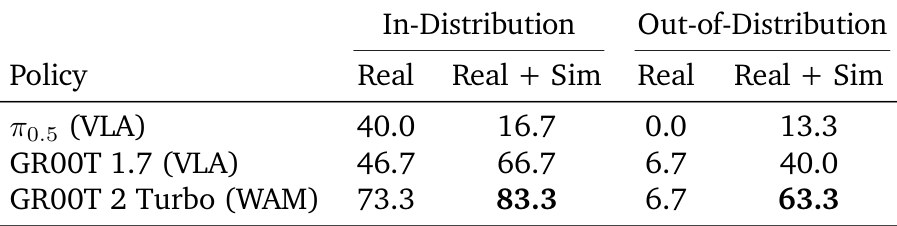
- 说明什么
- 成功率更高，也更会用仿真数据。Popcorn 48/48（GR00T 1.7 83.3%），table clean-up 93.3 对 73.3，ground pick-up 83.3 对 50.0，spill clean-up 46.7 对 43.3。OOD pick-and-place：只用真机数据都是 6.7%，加仿真数据后 Turbo 63.3%，GR00T 1.7 40.0%。
- 在故事里
- WAM 这条路延伸到 humanoid 和 sim-to-real。论文的解释是假设：视频预测让渲染帧和真实帧落在同一个 latent 空间里。
- 指标
- 二值成功率，没有部分得分。Popcorn 每次要装好两杯；table clean-up 每次要把 6 件物品都放进箱子。
- 怎么评测
- 各模型用同样的示范、同样的 token action space 和相机 post-train；popcorn 48 次，其余每格 30 次。
- 仿真数据：把真机录下的 whole-body 动作在仿真里回放，用 CMA-ES 拟合桌子和物体的摆放，再渲染到很多房间；共 25 万条、1,000 小时。
- 63.3 对 40.0 是 19 次对 12 次成功，论文自己说只是 suggestive（Fisher p ≈ 0.12）。
E9Digital twin 里的成绩能预测真机吗？§4.5.2 · §J.2.1
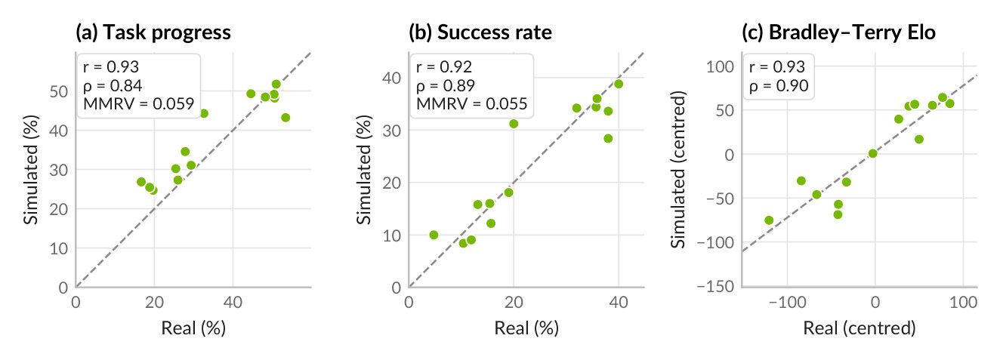
- 说明什么
- 相关性高。14 个 checkpoint、25 个 YAM 任务：Pearson r 是 0.93（任务进度）、0.92（成功率）、0.93（Elo），达到同样试验次数下完美仿真器上限的 95–99%。DROID 上 5 个 checkpoint：0.98 / 0.95 / 0.97。
- 在故事里
- 结论里的第三条观察：进展取决于测量。仿真先筛，真机定论。
- 指标
- Pearson r（数值一致）、Spearman ρ（排名一致）、MMRV（排名违反的程度，越小越好）。
- 怎么评测
- Policy 只在真机数据上训练，直接放进仿真，不 fine-tune，也不用仿真数据 co-train。
- 真机每任务 5 次盲测 A/B，初始摆放用投影叠加对齐到仿真；仿真每任务 10 次。
- 还没验证的（§5）：接触密集的装配、会利用仿真误差的 RL policy、比较训练 recipe 而不是 checkpoint。
Limits
局限和开放问题
- 预测多细才够，不清楚：Turbo 的 latent 网格小 4 倍，YAM 上只掉 6.7 点（71.7 → 65.0），灵巧手上掉一半（68.6 → 34.3）。
- 记忆：只看 0.8 s 历史，需要记忆的任务交给了 agent。
- 力和触觉：只作为输出（DexUMI 的关节力矩），不是输入。
- 接口：图像上的点只说哪里，不说怎么做；倒、舀、擦还靠语言。SONIC 的 latent 里也没有显式的接触力。
- X-Adapt 在最精细的任务上还低：Slide Dabbing 10%，Handover Flask 20%。
- 数据没有“汇率”：一小时人类视频、UMI、遥操作各换多少机器人性能，没测过。
- 评测分辨率：每任务最多 20 次，分不清 95% 和 99%（论文估计每个 policy 要约 285 次）；30–35% 的 A/B 比较是平局。
- 验证：agent 的 8 次装配失败里有 3 次是螺丝没拧到底，GR00T 2 和 agent 都判成了完成。
- 对照不完全干净：GR00T 1.7 和 GR00T 2 的 backbone、初始化也不同（§B.1.5）；“无 UMI pretraining”的 checkpoint 来自更早的 run。
- 还不能复现：项目页写代码 12 月发布；现在公开的是 whitepaper 和 Human-1M-100K（100,000 h）。所有数字都是 NVIDIA 自己报的。
For Robot learning in simulation
对我们有什么用
- robot-harness：Fig. 6 和我们的 Runtime 基本同构。
wam_act/stop_wam相当于 RPent 的 VLA_ACT；单个 control worker 管执行权，对应 Supervisor 管 robot mutation；AGENTS.md、SKILL.md、task.md 对应 skill library。能直接借的是执行策略：policy 默认执行，agent 只在卡住或掉件时接管，修完验证再交还。 - RoboDojo 和 LIBERO 上的对标数字：RoboDojo（layout bank 0）SFT 35.2% → 加 agent 72.3% → 再加 RL 75.8%；agent 的增益集中在 Memory（36.0 → 93.7）和 Open（5.8 → 79.2），Precision 主要靠 RL（40.5 → 53.7）。LIBERO-PRO 的 45 个任务上，按仿真器状态画的标记（不经 agent）把成功率从 69.6% 提到 85.0%（§G.2）。
- real-to-sim：评测用的 digital twin 是 agent 加 SimFoundry 建的，和真机 r = 0.93。可以搬到 real2sim-anything 和 WorldClaw 的三件事：两套 collider（粗 hull 加精细 SDF），装配用 attachment joint，用“回放真机示范”当验收测试。